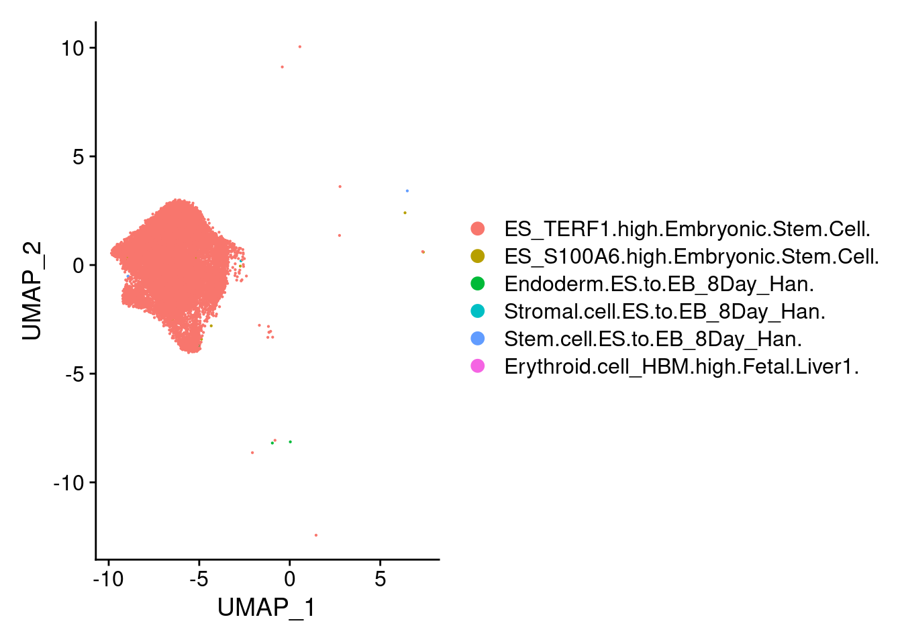

Last updated: 2020-09-01
Checks: 7 0
Knit directory: Embryoid_Body_Pilot_Workflowr/analysis/
This reproducible R Markdown analysis was created with workflowr (version 1.6.2). The Checks tab describes the reproducibility checks that were applied when the results were created. The Past versions tab lists the development history.
Great! Since the R Markdown file has been committed to the Git repository, you know the exact version of the code that produced these results.
Great job! The global environment was empty. Objects defined in the global environment can affect the analysis in your R Markdown file in unknown ways. For reproduciblity it's best to always run the code in an empty environment.
The command set.seed(20200804) was run prior to running the code in the R Markdown file. Setting a seed ensures that any results that rely on randomness, e.g. subsampling or permutations, are reproducible.
Great job! Recording the operating system, R version, and package versions is critical for reproducibility.
Nice! There were no cached chunks for this analysis, so you can be confident that you successfully produced the results during this run.
Great job! Using relative paths to the files within your workflowr project makes it easier to run your code on other machines.
Great! You are using Git for version control. Tracking code development and connecting the code version to the results is critical for reproducibility.
The results in this page were generated with repository version 0b0d220. See the Past versions tab to see a history of the changes made to the R Markdown and HTML files.
Note that you need to be careful to ensure that all relevant files for the analysis have been committed to Git prior to generating the results (you can use wflow_publish or wflow_git_commit). workflowr only checks the R Markdown file, but you know if there are other scripts or data files that it depends on. Below is the status of the Git repository when the results were generated:
Ignored files:
Ignored: .Rhistory
Ignored: .Rproj.user/
Ignored: analysis/.Rhistory
Ignored: analysis/figure/
Ignored: output/.Rhistory
Untracked files:
Untracked: analysis/SingleCell_HierarchicalClustering_NoGeneFilter.Rmd
Untracked: analysis/child/
Untracked: code/ConvertToDGE.Rmd
Untracked: code/ConvertToDGE_PseudoBulk.Rmd
Untracked: code/EB.getHumanMetadata.Rmd
Untracked: code/get_genelist_byPCTthresh.Rmd
Untracked: figure/
Untracked: output/DGELists/
Untracked: output/GeneLists_by_minPCT/
Untracked: output/mergedObjects/
Untracked: output/pdfs/
Untracked: output/sampleQCrds/
Note that any generated files, e.g. HTML, png, CSS, etc., are not included in this status report because it is ok for generated content to have uncommitted changes.
These are the previous versions of the repository in which changes were made to the R Markdown (analysis/RunscHCL_HarmonyBatchInd.Rmd) and HTML (docs/RunscHCL_HarmonyBatchInd.html) files. If you've configured a remote Git repository (see ?wflow_git_remote), click on the hyperlinks in the table below to view the files as they were in that past version.
| File | Version | Author | Date | Message |
|---|---|---|---|---|
| Rmd | 0b0d220 | KLRhodes | 2020-09-01 | wflow_publish("analysis/RunscHCL_HarmonyBatchInd.Rmd") |
library(Seurat)
library(Matrix)
library(scran)Loading required package: SingleCellExperimentLoading required package: SummarizedExperimentLoading required package: GenomicRangesLoading required package: stats4Loading required package: BiocGenericsLoading required package: parallel
Attaching package: 'BiocGenerics'The following objects are masked from 'package:parallel':
clusterApply, clusterApplyLB, clusterCall, clusterEvalQ,
clusterExport, clusterMap, parApply, parCapply, parLapply,
parLapplyLB, parRapply, parSapply, parSapplyLBThe following object is masked from 'package:Matrix':
whichThe following objects are masked from 'package:stats':
IQR, mad, sd, var, xtabsThe following objects are masked from 'package:base':
Filter, Find, Map, Position, Reduce, anyDuplicated, append,
as.data.frame, basename, cbind, colnames, dirname, do.call,
duplicated, eval, evalq, get, grep, grepl, intersect, is.unsorted,
lapply, mapply, match, mget, order, paste, pmax, pmax.int, pmin,
pmin.int, rank, rbind, rownames, sapply, setdiff, sort, table,
tapply, union, unique, unsplit, which, which.max, which.minLoading required package: S4Vectors
Attaching package: 'S4Vectors'The following object is masked from 'package:Matrix':
expandThe following object is masked from 'package:base':
expand.gridLoading required package: IRangesLoading required package: GenomeInfoDbLoading required package: BiobaseWelcome to Bioconductor
Vignettes contain introductory material; view with
'browseVignettes()'. To cite Bioconductor, see
'citation("Biobase")', and for packages 'citation("pkgname")'.Loading required package: DelayedArrayLoading required package: matrixStats
Attaching package: 'matrixStats'The following objects are masked from 'package:Biobase':
anyMissing, rowMediansLoading required package: BiocParallel
Attaching package: 'DelayedArray'The following objects are masked from 'package:matrixStats':
colMaxs, colMins, colRanges, rowMaxs, rowMins, rowRangesThe following objects are masked from 'package:base':
aperm, apply, rowsum
Attaching package: 'SummarizedExperiment'The following object is masked from 'package:Seurat':
Assayslibrary(scHCL)Warning: replacing previous import 'shiny::dataTableOutput' by
'DT::dataTableOutput' when loading 'scHCL'Warning: replacing previous import 'shiny::renderDataTable' by
'DT::renderDataTable' when loading 'scHCL'Load seurat object
path<- here::here("output/mergedObjects/")
merged<- readRDS(paste0(path,'Harmony.Batchindividual.rds'))Convert to DGE (Here, I am not using the Convert_to_DGE script because a) I want to use raw counts rather than normalized and b)I do not want to filter genes by min pct (just keep all genes)).
#save metadata
samps<- merged@meta.datasce<- as.SingleCellExperiment(merged, assay="RNA")dge<- convertTo(sce, type= "edgeR")remove(sce)dge$samples<- cbind(dge$samples, samps)run<- knitr::knit_expand(file = here::here("analysis/child/scHCL_child.Rmd"))library(scHCL)
library(reshape2)
library(dplyr)
library(ComplexHeatmap)schcl.result<- scHCL(scdata=dge$counts, numbers_plot=6)mat<-as.matrix(acast(schcl.result$scHCL_probility, formula=schcl.result$scHCL_probility$`Cell`~schcl.result$scHCL_probility$`Cell type`, value.var="Score"))
#replacing NAs with zeros so that heatmap with run
mat[is.na(mat)]<-0
rownames(mat)<-NULL
Heatmap(mat, column_names_gp = gpar(fontsize=5))top.celltype<- schcl.result[[4]] %>% filter(row_number() %% 6 == 1)submerged<- AddMetaData(object = merged, metadata = top.celltype$`Cell type`, col.name= "scHCL.type")length(unique(top.celltype$`Cell type`))[1] 74DimPlot(submerged, group.by = "scHCL.type") + NoLegend()#based on dimplot, seems like majority ofcells are assigned to very few cell types. exploring what those are.
t<- table(top.celltype$`Cell type`)
t<- sort(t, decreasing=T)
t<- t[t>0]
t
ES_TERF1.high.Embryonic.Stem.Cell.
19448
Stem.cell.ES.to.EB_8Day_Han.
8032
Endoderm.ES.to.EB_8Day_Han.
5606
Neuron.ES.to.EB_8Day_Han.
4542
Stromal.cell.ES.to.EB_8Day_Han.
2875
Neuron.Fetal.Brain4.
833
Neuron.Fetal.Brain5.
171
ES_S100A6.high.Embryonic.Stem.Cell.
155
Neuron_PPP1R17.high.Fetal.Brain6.
145
Endothelial.cell.ES.to.EB_8Day_Han.
143
Chromaffin.cell_VIP.high.Fetal.Adrenal.Gland2.
77
Vascular.endothelial.cell_IGFBP3.high.Fetal.Adrenal.Gland2.
59
Proliferating.radial.glia.Fetal.Brain5.
54
ES_ANXA1.high.Embryonic.Stem.Cell.
40
Radial.glia_HES1_high.Fetal.Brain3.
40
Proliferating.cell_UBE2C_high.Fetal.Brain3.
29
Neuron_NEUROD6.high.Fetal.Brain6.
21
Fibroblast_COL3A1.high..Fetal.Adrenal.Gland2.
20
Luminal.cell_AGR2.high.Breast.Epithelium_Nguyen.
15
Muscle.cell.ES.to.EB_8Day_Han.
12
Cytotrophoblast.Placenta1.
12
Neuron_NEUROD6.high.Fetal.Brain3.
11
Fibroblast.Fetal.Male.Gonad1.
10
Endothelial.cell.Adult.Pancreas_Baron.
9
Contaminated.cell.Breast.Epithelium_Nguyen.
9
Cytotrophoblast_PEG10.high.Chorionic.Villus1.
9
Chromaffin.cell_SPOCK3.high.Fetal.Adrenal.Gland2.
9
Hepatocyte.like.cell.Fetal.Adrenal.Gland2.
8
Sertoli.cell_DLK1.high.Fetal.Male.Gonad1.
8
Proliferating.cell.Fetal.Brain4.
7
GABAergic.neuron.Fetal.Brain_Zhong.
6
Basal_ACTA2.high.Breast.Epithelium_Nguyen.
5
Neuron.Fetal.Adrenal.Gland2.
5
Ductal.cell.Adult.Pancreas_Baron.
4
Stromal.cell_SFRP2.high.Placenta1.
4
Proliferating.cell_KIAA0101_high.Fetal.Brain3.
3
Erythroid.cell_HBM.high.Fetal.Liver1.
3
Megakaryocyte.Erythroid.progenitor.cell.Fetal.Liver1.
3
Hepatocyte_FGB.high.Adult.Liver1.
2
Schwann.cell.Adult.Pancreas_Baron.
2
Activated_stellate.cell.Adult.Pancreas_Baron.
2
Endothelial.cell_STC1.high.Fetal.Adrenal.Gland2.
2
Oligodendrocyte.Fetal.Brain4.
2
Fibroblast_APOD.high.Fetal.Brain5.
2
Fibroblast_COL1A1.high.Fetal.Brain5.
2
Fibroblast_TWIST2.high.Fetal.Muscle1.
2
Fibroblast_MFAP5.high.Fetal.Muscle1.
2
Epithelial.cell.Placenta1.
2
Megakaryocyte.Erythrocyte.progenitor.cell.Adult.Bone.Marrow.CD34P.
1
Epithelial.cell_KRT13.high.Adult.Esophagus2.
1
Hepatocyte.Adult.Liver4.
1
Pancreatic.stellate.cell.Adult.Pancreas_Segerstolpe.
1
Basal.cell_S100A2.high.Adult.Trachea2.
1
Smooth.muscle.cell.Chorionic.Villus1.
1
Proliferating.cell.Cord.Blood.CD34P2.
1
Megakaryocyte.Cord.Blood.CD34P2.
1
Epithelial.cell.ES.to.EB_8Day_Han.
1
Conventional.dendritic.cell.Fetal.Adrenal.Gland2.
1
Vascular.endothelial.cell_FABP5.high.Fetal.Adrenal.Gland2.
1
Astrocyte.Fetal.Brain3.
1
Radial.glia.Fetal.Brain4.
1
Fibroblast.Fetal.Brain4.
1
Proliferating.cell.Fetal.Brain5.
1
Neuron.Fetal.Brain_Zhong.
1
Stromal.cell_SULT1E1.high.Fetal.Calvaria1.
1
Fibroblast_PENK.high.Fetal.Heart1.
1
Fibroblast_PENK.high.Fetal.Heart2.
1
Neutrophil.Fetal.Kidney3..1
1
Fibroblast.Fetal.Lung1.
1
Proliferating.cell_UBE2C.high.Fetal.Lung2.
1
Epithelial.cell_CD24.high.Fetal.Male.Gonad1.
1
Epithelial.cell_CYSTM1.high.Fetal.Male.Gonad1.
1
Cytotrophoblast.Placenta_Tsang.
1
VCT2.Placenta_VentoTormo.
1 top.types<- rownames(t[1:20])submergedAn object of class Seurat
37556 features across 42488 samples within 2 assays
Active assay: SCT (16935 features, 5000 variable features)
1 other assay present: RNA
3 dimensional reductions calculated: pca, harmony, umap#subset the seurat object to only cells from the top ten cell types and visualize
sub<- subset(submerged, scHCL.type %in% top.types)subAn object of class Seurat
37556 features across 42317 samples within 2 assays
Active assay: SCT (16935 features, 5000 variable features)
1 other assay present: RNA
3 dimensional reductions calculated: pca, harmony, umapDimPlot(sub, group.by = "scHCL.type")viewing cell types by low res seurat clustering
Idents(submerged)<- 'SCT_snn_res.0.1'
stem<-subset(submerged, ident="0")
endo<-subset(submerged, ident="4")
meso<-subset(submerged, ident="2")
earlyect<-subset(submerged, ident="1")
neur<-subset(submerged, ident="5")
ncrest<-subset(submerged, ident="3")
endothelial<-subset(submerged, ident="6")DimPlot(stem, group.by = "scHCL.type")
t<- table(stem@meta.data$scHCL.type)
t<- sort(t, decreasing=T)
t<- t[t>0]
t
ES_TERF1.high.Embryonic.Stem.Cell. ES_S100A6.high.Embryonic.Stem.Cell.
17673 9
Endoderm.ES.to.EB_8Day_Han. Stem.cell.ES.to.EB_8Day_Han.
5 3
Stromal.cell.ES.to.EB_8Day_Han. Erythroid.cell_HBM.high.Fetal.Liver1.
2 1 DimPlot(endo, group.by = "scHCL.type")t<- table(endo@meta.data$scHCL.type)
t<- sort(t, decreasing=T)
t<- t[t>0]
t
Endoderm.ES.to.EB_8Day_Han.
2121
ES_TERF1.high.Embryonic.Stem.Cell.
100
ES_S100A6.high.Embryonic.Stem.Cell.
34
Stem.cell.ES.to.EB_8Day_Han.
22
Luminal.cell_AGR2.high.Breast.Epithelium_Nguyen.
15
Cytotrophoblast.Placenta1.
12
Contaminated.cell.Breast.Epithelium_Nguyen.
9
Cytotrophoblast_PEG10.high.Chorionic.Villus1.
9
Stromal.cell.ES.to.EB_8Day_Han.
8
Hepatocyte.like.cell.Fetal.Adrenal.Gland2.
8
ES_ANXA1.high.Embryonic.Stem.Cell.
7
Basal_ACTA2.high.Breast.Epithelium_Nguyen.
5
Ductal.cell.Adult.Pancreas_Baron.
4
Hepatocyte_FGB.high.Adult.Liver1.
2
Neuron.ES.to.EB_8Day_Han.
2
Epithelial.cell.Placenta1.
2
Epithelial.cell_KRT13.high.Adult.Esophagus2.
1
Hepatocyte.Adult.Liver4.
1
Basal.cell_S100A2.high.Adult.Trachea2.
1
Epithelial.cell.ES.to.EB_8Day_Han.
1
Neutrophil.Fetal.Kidney3..1
1
Epithelial.cell_CD24.high.Fetal.Male.Gonad1.
1
Cytotrophoblast.Placenta_Tsang.
1
VCT2.Placenta_VentoTormo.
1 DimPlot(meso, group.by = "scHCL.type")t<- table(meso@meta.data$scHCL.type)
t<- sort(t, decreasing=T)
t<- t[t>0]
t
Endoderm.ES.to.EB_8Day_Han.
1960
Stromal.cell.ES.to.EB_8Day_Han.
973
ES_TERF1.high.Embryonic.Stem.Cell.
37
Neuron.ES.to.EB_8Day_Han.
27
Fibroblast_COL3A1.high..Fetal.Adrenal.Gland2.
20
Stem.cell.ES.to.EB_8Day_Han.
18
Muscle.cell.ES.to.EB_8Day_Han.
12
Fibroblast.Fetal.Male.Gonad1.
10
Sertoli.cell_DLK1.high.Fetal.Male.Gonad1.
8
Stromal.cell_SFRP2.high.Placenta1.
4
ES_S100A6.high.Embryonic.Stem.Cell.
2
Fibroblast_APOD.high.Fetal.Brain5.
2
Fibroblast_TWIST2.high.Fetal.Muscle1.
2
Fibroblast_MFAP5.high.Fetal.Muscle1.
2
Activated_stellate.cell.Adult.Pancreas_Baron.
1
Pancreatic.stellate.cell.Adult.Pancreas_Segerstolpe.
1
Smooth.muscle.cell.Chorionic.Villus1.
1
Stromal.cell_SULT1E1.high.Fetal.Calvaria1.
1
Fibroblast_PENK.high.Fetal.Heart1.
1
Fibroblast_PENK.high.Fetal.Heart2.
1
Fibroblast.Fetal.Lung1.
1
Proliferating.cell_UBE2C.high.Fetal.Lung2.
1
Epithelial.cell_CYSTM1.high.Fetal.Male.Gonad1.
1 DimPlot(earlyect, group.by = "scHCL.type")t<- table(earlyect@meta.data$scHCL.type)
t<- sort(t, decreasing=T)
t<- t[t>0]
t
Stem.cell.ES.to.EB_8Day_Han.
6615
Neuron.ES.to.EB_8Day_Han.
3522
ES_TERF1.high.Embryonic.Stem.Cell.
1475
Endoderm.ES.to.EB_8Day_Han.
1357
Stromal.cell.ES.to.EB_8Day_Han.
1190
ES_S100A6.high.Embryonic.Stem.Cell.
85
Radial.glia_HES1_high.Fetal.Brain3.
40
Proliferating.radial.glia.Fetal.Brain5.
40
ES_ANXA1.high.Embryonic.Stem.Cell.
27
Proliferating.cell_UBE2C_high.Fetal.Brain3.
19
Neuron.Fetal.Brain5.
5
Oligodendrocyte.Fetal.Brain4.
2
Activated_stellate.cell.Adult.Pancreas_Baron.
1
Astrocyte.Fetal.Brain3.
1
Neuron.Fetal.Brain4.
1
Proliferating.cell.Fetal.Brain4.
1
Radial.glia.Fetal.Brain4.
1
Fibroblast.Fetal.Brain4.
1 DimPlot(neur, group.by = "scHCL.type")t<- table(neur@meta.data$scHCL.type)
t<- sort(t, decreasing=T)
t<- t[t>0]
t
Neuron.Fetal.Brain4.
832
Neuron.ES.to.EB_8Day_Han.
380
Stem.cell.ES.to.EB_8Day_Han.
220
Neuron.Fetal.Brain5.
166
Neuron_PPP1R17.high.Fetal.Brain6.
145
Chromaffin.cell_VIP.high.Fetal.Adrenal.Gland2.
77
ES_TERF1.high.Embryonic.Stem.Cell.
46
Stromal.cell.ES.to.EB_8Day_Han.
30
Neuron_NEUROD6.high.Fetal.Brain6.
21
Proliferating.radial.glia.Fetal.Brain5.
14
Neuron_NEUROD6.high.Fetal.Brain3.
11
Proliferating.cell_UBE2C_high.Fetal.Brain3.
10
Chromaffin.cell_SPOCK3.high.Fetal.Adrenal.Gland2.
9
Endoderm.ES.to.EB_8Day_Han.
7
Proliferating.cell.Fetal.Brain4.
6
GABAergic.neuron.Fetal.Brain_Zhong.
6
ES_S100A6.high.Embryonic.Stem.Cell.
4
Proliferating.cell_KIAA0101_high.Fetal.Brain3.
3
ES_ANXA1.high.Embryonic.Stem.Cell.
1
Proliferating.cell.Fetal.Brain5.
1
Neuron.Fetal.Brain_Zhong.
1 DimPlot(ncrest, group.by = "scHCL.type")t<- table(ncrest@meta.data$scHCL.type)
t<- sort(t, decreasing=T)
t<- t[t>0]
t
Stem.cell.ES.to.EB_8Day_Han. Stromal.cell.ES.to.EB_8Day_Han.
1146 643
Neuron.ES.to.EB_8Day_Han. Endoderm.ES.to.EB_8Day_Han.
610 128
ES_TERF1.high.Embryonic.Stem.Cell. ES_S100A6.high.Embryonic.Stem.Cell.
111 21
ES_ANXA1.high.Embryonic.Stem.Cell. Neuron.Fetal.Adrenal.Gland2.
5 5
Schwann.cell.Adult.Pancreas_Baron. Fibroblast_COL1A1.high.Fetal.Brain5.
2 2 DimPlot(endothelial, group.by = "scHCL.type")t<- table(endothelial@meta.data$scHCL.type)
t<- sort(t, decreasing=T)
t<- t[t>0]
t
Endothelial.cell.ES.to.EB_8Day_Han.
143
Vascular.endothelial.cell_IGFBP3.high.Fetal.Adrenal.Gland2.
59
Stromal.cell.ES.to.EB_8Day_Han.
29
Endoderm.ES.to.EB_8Day_Han.
28
Endothelial.cell.Adult.Pancreas_Baron.
9
Stem.cell.ES.to.EB_8Day_Han.
8
ES_TERF1.high.Embryonic.Stem.Cell.
6
Megakaryocyte.Erythroid.progenitor.cell.Fetal.Liver1.
3
Endothelial.cell_STC1.high.Fetal.Adrenal.Gland2.
2
Erythroid.cell_HBM.high.Fetal.Liver1.
2
Megakaryocyte.Erythrocyte.progenitor.cell.Adult.Bone.Marrow.CD34P.
1
Proliferating.cell.Cord.Blood.CD34P2.
1
Megakaryocyte.Cord.Blood.CD34P2.
1
Neuron.ES.to.EB_8Day_Han.
1
Conventional.dendritic.cell.Fetal.Adrenal.Gland2.
1
Vascular.endothelial.cell_FABP5.high.Fetal.Adrenal.Gland2.
1
sessionInfo()R version 3.6.1 (2019-07-05)
Platform: x86_64-pc-linux-gnu (64-bit)
Running under: Scientific Linux 7.4 (Nitrogen)
Matrix products: default
BLAS/LAPACK: /software/openblas-0.2.19-el7-x86_64/lib/libopenblas_haswellp-r0.2.19.so
locale:
[1] C
attached base packages:
[1] grid parallel stats4 stats graphics grDevices utils
[8] datasets methods base
other attached packages:
[1] ComplexHeatmap_2.2.0 dplyr_1.0.0
[3] reshape2_1.4.4 scHCL_0.1.1
[5] scran_1.14.6 SingleCellExperiment_1.8.0
[7] SummarizedExperiment_1.16.1 DelayedArray_0.12.3
[9] BiocParallel_1.20.1 matrixStats_0.56.0
[11] Biobase_2.46.0 GenomicRanges_1.38.0
[13] GenomeInfoDb_1.22.1 IRanges_2.20.2
[15] S4Vectors_0.24.4 BiocGenerics_0.32.0
[17] Matrix_1.2-18 Seurat_3.2.0
[19] workflowr_1.6.2
loaded via a namespace (and not attached):
[1] circlize_0.4.10 backports_1.1.8 plyr_1.8.6
[4] igraph_1.2.5 lazyeval_0.2.2 splines_3.6.1
[7] listenv_0.8.0 scater_1.14.6 ggplot2_3.3.2
[10] digest_0.6.25 htmltools_0.5.0 viridis_0.5.1
[13] gdata_2.18.0 magrittr_1.5 tensor_1.5
[16] cluster_2.1.0 ROCR_1.0-7 limma_3.42.2
[19] globals_0.12.5 colorspace_1.4-1 rappdirs_0.3.1
[22] ggrepel_0.8.2 xfun_0.16 crayon_1.3.4
[25] RCurl_1.98-1.2 jsonlite_1.7.0 spatstat_1.64-1
[28] spatstat.data_1.4-3 survival_3.2-3 zoo_1.8-8
[31] ape_5.3 glue_1.4.1 polyclip_1.10-0
[34] gtable_0.3.0 zlibbioc_1.32.0 XVector_0.26.0
[37] leiden_0.3.3 GetoptLong_1.0.2 BiocSingular_1.2.2
[40] shape_1.4.4 future.apply_1.6.0 abind_1.4-5
[43] scales_1.1.1 pheatmap_1.0.12 edgeR_3.28.1
[46] miniUI_0.1.1.1 Rcpp_1.0.5 viridisLite_0.3.0
[49] xtable_1.8-4 clue_0.3-57 reticulate_1.16
[52] dqrng_0.2.1 rsvd_1.0.3 DT_0.14
[55] htmlwidgets_1.5.1 httr_1.4.2 gplots_3.0.4
[58] RColorBrewer_1.1-2 ellipsis_0.3.1 ica_1.0-2
[61] farver_2.0.3 pkgconfig_2.0.3 uwot_0.1.8
[64] deldir_0.1-28 here_0.1-11 locfit_1.5-9.4
[67] labeling_0.3 tidyselect_1.1.0 rlang_0.4.7
[70] later_1.1.0.1 munsell_0.5.0 tools_3.6.1
[73] generics_0.0.2 ggridges_0.5.2 evaluate_0.14
[76] stringr_1.4.0 fastmap_1.0.1 yaml_2.2.1
[79] goftest_1.2-2 npsurv_0.4-0 knitr_1.29
[82] fs_1.4.2 fitdistrplus_1.0-14 caTools_1.18.0
[85] purrr_0.3.4 RANN_2.6.1 pbapply_1.4-2
[88] future_1.18.0 nlme_3.1-140 whisker_0.4
[91] mime_0.9 shinythemes_1.1.2 compiler_3.6.1
[94] beeswarm_0.2.3 plotly_4.9.2.1 png_0.1-7
[97] lsei_1.2-0 spatstat.utils_1.17-0 statmod_1.4.34
[100] tibble_3.0.3 stringi_1.4.6 lattice_0.20-38
[103] vctrs_0.3.2 pillar_1.4.6 lifecycle_0.2.0
[106] GlobalOptions_0.1.2 lmtest_0.9-37 RcppAnnoy_0.0.16
[109] BiocNeighbors_1.4.2 data.table_1.13.0 cowplot_1.0.0
[112] bitops_1.0-6 irlba_2.3.3 httpuv_1.5.4
[115] patchwork_1.0.1 R6_2.4.1 promises_1.1.1
[118] KernSmooth_2.23-15 gridExtra_2.3 vipor_0.4.5
[121] codetools_0.2-16 MASS_7.3-51.4 gtools_3.8.2
[124] rjson_0.2.20 rprojroot_1.3-2 sctransform_0.2.1
[127] GenomeInfoDbData_1.2.2 mgcv_1.8-28 rpart_4.1-15
[130] tidyr_1.1.0 rmarkdown_2.3 DelayedMatrixStats_1.8.0
[133] Rtsne_0.15 git2r_0.26.1 shiny_1.5.0
[136] ggbeeswarm_0.6.0